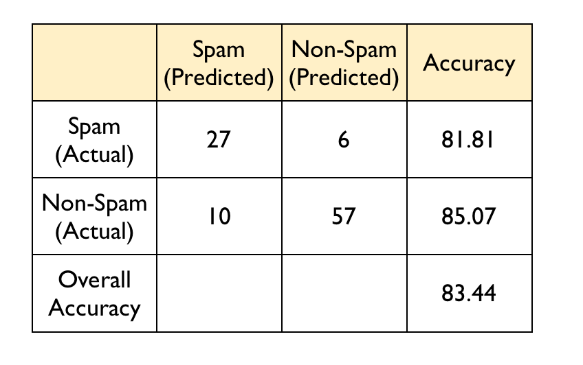

Using Text Mining Techniques during Document Review
Data Scientist
Better programmming skills than a statistician
Better statistics know-how than a programmer
and domain knowledge
But I feel fine!
Text mining
The process of generating high equality information from text content using elements of machine learning
Remember, data is not information.
We want to write programs that can go through databases automatically, and sniff out patterns.
In essence, the framework we use to understand the data is derived from the data itself
The goals of text mining
1. Find useful content and information
2. Categorize, organize and label text with little human intervention
3. Do the other two on vast amounts of text.
The increasingly large amounts of text of all kinds that is contantly generated poses several issues of scalability
But also plays to data mining's greatest strength
The framework for understanding the data is derived from the data itself
The more data, the better the framework, sorta like having more sand to pan while panning for gold
Let's see how this plays out.
Think for a few seconds on how you would devise rules to recognize names of people
As we do value being able to determine among entity groups
No Really. Go do it.Done?
I'll share what I had.
I would want to go for easy wins, so I will have the program grab any two words immediately following a salutation, like Mr. Mrs. etc
Some may have fancier terms, like Titles of some sort
Can also do the same for some trailing terms, like M.D, CPA etc
Barring that I want any two words that are both capitalized
Dr. Pepper?
e e cummings?
Ok, no problem, I will just make more rules for those
But wait! Now you are on the wrong end of data (being drowned by data tsunami).
Laziness is a virtue
Hard to scale knowledge work
Surf the data wave instead
Why not mark all the names, and have data mining rules infer the patterns from the data to detect the rest
1. Mark up the aspects you want.
2. Create Model
3. Test and Tweak Model
4. Run Model
5. Tweak Model
Identify Desired Features/ Aspects
If you can define it, you can find it
Thought to be near impossible

Challenge accepted

Text Classification with Naive Bayes
Objective: Sort documents into user defined categories
Spam Filtering
Spam Filter used to rely on rule based filtering or blacklists
if $subj contains mortgage and Body contains "Click here to unsubscribe"
Place into spam folder
Alternately, use blacklists, ban certain domains or IPs
Spammers were blocked, but so were other innocent people
Creating rules that are not trivially defeated is hard
Very sucessful/strict rules caused more false positives
These are bad
Paul Graham
Seminal Essay "A Plan for Spam" Popularized the probabilistic approach
" To recognize individual spam features you have to try to get into the mind of the spammer, and frankly I want to spend as little time inside the minds of spammers as possible."
Alternately, use blacklists, ban certain domains or IPs
Spammers were blocked, but so were other innocuous people
The most straightforward of approaches is Naive Bayes
Naive Bayes makes decisions on which category to place a document using probabilities derived from document and term.word frequency
Frequency of the categories
Frequency of the Words in each of the categories
Our test set consists of 6 documents
p(event) is read as the probability of an event, which will be between 1 and 0.
p(spam)=3/6
p(ham)=3/6
Conditional Probability
Number of time each word appears in a category divided by the number divided by the number of words in that class
In our example, lottery appears 1 time in three spams
p(A|B) is the probability of event A given Event B
p(word|category)
In our example, lottery occurs 1 time in 3 spams
p(lottery|spam)=.33
p(lottery|ham)=0
Tokenization
The bits of data that goes into building the model are features.
Analogous to a variable in a regression model, such as age or wage
Words are document features
When we say words we mean tokens
A token is the result of breaking a text document into small usable chunks of text.
Breaking by spaces, or periods
140.122.123.1 IP Address
Sentence with period but no space.Like these two.
Harder in other languages
便當
便
當
Stop Word List
the, is, at, which, and, on, hasAfter this each document is reduced to a bag of words
Word order, punctuation etc are not preserved
WonSpanish lottery click claim
Naive part
Assumes that all tokens are independent of one another
Obvious Wrong Assumption!
"Clam" is more likely to show up with "England" than say "Georgia", as in
New England Clam Chowder
New England Clam Bake
"Cow" is very unlikely to show up with "space"
Naive Bayes can still work very well even with this assumption
Look at other ways to relax this assumption
Naive Bayes can still work very well even with this assumption
Look at other ways to relax this assumption later
With each document as a bag of words
We calculate p(word|category) for all words and categories
Bayes Theorem
300 Year old tech
P(A|B)=P(B|A)P(A)/P(B)
Intuitively, I observe some evidence, what is the likleihood of the event
Ex: I have body aches. What is the probability I have Ebola?
I observe a document with "Spanish" "lottery" "won". What is the probability it is spam?
p(spam|"Spanish")=.5
p(spam|"lottery")=.8
p(spam|"won")=.4
We multiply the word probabilities with each other for numerator
.5*.8*.4=.16
For the denominator we multiply the inverse and add that to the value of the numerator
EX: p(notSpam|"Spanish")*p(notSpam|"lottery")*p(notSpam|"won")
.16+.5*.2*.6=.22
Numerator/Denominator to get a probability instead of likelihood
.16/.22=.72 or .72% chance of being spam
We are done if it is a binary classifier, else repeat for each category
Decision Rules
We need a type of decision for the probabilities we calculated
Basic work flow for successful Bayesian filtering
We have covered some of the steps already, so let's talk about evaluation
To know how the classifier is doing, we measure a few things
Type 1 errors
False Positive
Type 2 Error
False Negative
Whiche one matters more depends on the task
Ham as spam=Type 1=bad
Responsive as non/unresonsive=type 2= also bad
Use a confusion matrix
Reserve a seperate testing set of human classified docs
Apply the classifier, check expected results and tweak
Improving the model
Metadata
Information such as subject line for emails
Some words can be more of interest when appearing in different areas of the meta data
Classic example from pg is "free" in subject line is much more spammy compared to "free" in the body.
N-Grams
Recall the naive independence assumption?
We can add more information by dropping this and bringing in n-grams
n-grams work because words that are close together tend to hold information
A bigram is splitting text into pseudo phrases by skipping up to two words
Take the money and run.
Becomes
and so on
By forming n-grams as features, we take into account that neighbouring words are NOT independent, and preserve information
Stemming
Execution time tweak, trim features to stem words
"Running" trimmed to stem "run" for example
Some may trim out features of numbers to cut down the dictionary size
Defeating the model
Spam long passages and hope for a safe word
For example, placing a bible passage inside the document
The bible passage has several innocuous words, but the spammers hope is he triggers a word whose p(ham|word) is high
For example, if you have a good friend named Bob
Spammer pastes in "If Bob dole could dole dough"
Limiting each document to the most informative tokens can somewhat help (needs several lucky tokens in a row to bypass)
Code Words
Picked up whenever training set is expanded
Implementing the model
Apache Stack
Open NLP
NLTK
Bow
Gate
For those who want
Several commercial packages
Integration needs some glue code
Users and the Classifier
Beyond Classification, other text mining procedures
Named Entity Recognition
Clustering
Threading
Questions?
The plaintiffs asked for 500 keywords to search on,” said Mike Sullivan, chief executive of Autonomy Protect, the company’s e-discovery division. In response, he said, the defense lawyers used those words to analyze their own documents during the negotiations, and those results helped them bargain more effectively, Mr. Sullivan said.
New York Times 2011
Use a spacebar or arrow keys to navigate